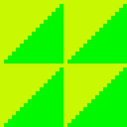
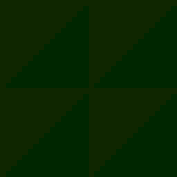

第 02 回
C++ からシェーダーに値を渡す(定数バッファ)
この回の目標
- C++ で決めた値(色・時間など)を、シェーダーで使える。
- 定数バッファの作り方と、毎フレームの渡し方が分かる。
開くサンプル

samples/C5_SetPSConstFTest
テンプレート: templates/02_constant_buffer.dxtemplate
動かすと、画像の色が少しずつ変わり続けます。C++ で毎フレーム変えている r, g, b を、シェーダーで画像の色に掛けています。

20 フレーム目
50 フレーム目80 フレーム目110 フレーム目
しくみ
シェーダーは GPU で動くので、C++ の変数を直接は読めません。 定数バッファという入れ物を作り、C++ で値を書いて GPU に送ると、シェーダーから読めます。
読むところ
src/main.cpp
C++pscb = CreateShaderConstantBuffer( sizeof( FLOAT4 ) ) ; // 大きさは 16 バイトの倍数
psparam = ( FLOAT4 * )GetBufferShaderConstantBuffer( pscb ) ; // 書き込む場所
C++*psparam = f4 ; // 値を書いて
UpdateShaderConstantBuffer( pscb ) ; // GPU に送って
SetShaderConstantBuffer( pscb, DX_SHADERTYPE_PIXEL, 4 ) ; // ピクセルシェーダーのスロット 4 に置く
- 作るのは最初の 1 回。書いて・送って・置くのは、値が変わるたび(毎フレーム)。
- 最後に
DeleteShaderConstantBufferで消します。
shaders/SetPSConstFTestPS.hlsl
HLSL(シェーダー)cbuffer SetPSConstFTestParam : register( b4 )
{
float4 cfMultiplyColor ;
} ;
b4の 4 が、C++ のSetShaderConstantBuffer( …, 4 )の 4。- 0〜3 は DxLib が使っているので、自分の値は 4 から(仕様書 9 章)。
気をつけること
- 大きさは 16 バイト(float 4 個)の倍数。float を 1 個だけ渡したいときも、float4 1 個分(16 バイト)で作る。倍数でないと作れません(-1 が返る)。
- 値を 2 つ以上渡すときは、C++ で構造体を作り、HLSL の cbuffer と同じ順番で並べる。
- 古い解説記事の
SetPSConstF/SetVSConstFは Direct3D 9 用で、Direct3D 11 では何もしません。 SetDrawBlendMode( DX_BLENDMODE_ALPHA, 128 )の 128(不透明度)は、自分のシェーダーには届きません。不透明度も自分で渡します(仕様書 8.5)。
struct { FLOAT4 Color ; FLOAT4 Time ; } の並び。HLSL の cbuffer も同じ順番で書きます。課題
- ★2-1画像を時間で点滅させる。C++ で経過時間(秒)を渡し、シェーダーで
sin( 時間 * 速さ ) * 0.5f + 0.5fを明るさに掛ける(sin は -1〜1 なので、0〜1 にする)。- 1 フレームを 1/60 秒として、毎フレーム足していけばよい。
- ★★2-2フェードイン・フェードアウトにする。明るさの代わりにアルファを変え、C++ で
SetDrawBlendMode( DX_BLENDMODE_ALPHA, 255 )にする。 - ★★2-3色と時間の 2 つを渡す。C++ で
struct { FLOAT4 Color ; FLOAT4 Time ; }を作り、HLSL も同じ順番の cbuffer にする。
sin(点線)は -1〜1 を行ったり来たりします。* 0.5f + 0.5f で 0〜1(青)にすると、明るさとして掛けられます。解答例: 2-1 → answers/02_blink(【課題】 【課題 2-1】 の所)
解答例を動かした画面
answers/02_blink(明るさが時間で変わる。写真に変えてある)